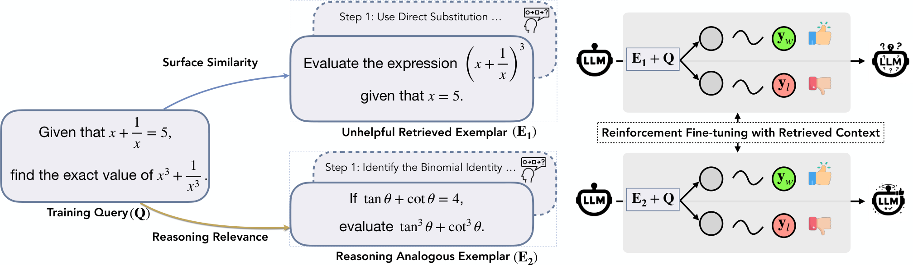
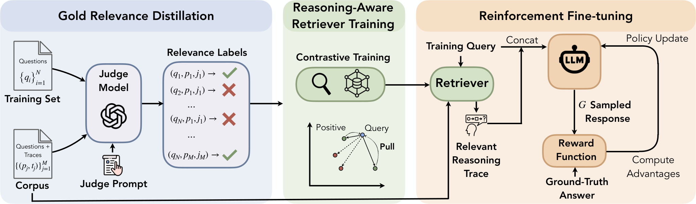

RA-RFT: Retrieve by Reasoning Benefit, Not Similarity — Then RL on Top
Paper: "Learning to Reason by Analogy via Retrieval-Augmented Reinforcement Fine-Tuning", arXiv 2606.13680, by Zilin Xiao, Qi Ma, Chun-cheng Jason Chen, Xintao Chen, Avinash Atreya, Hanjie Chen, Vicente Ordonez (several authors are Rice University — inferred from author homepages, verify in the paper). Grounded in the arXiv abstract and HTML full text.
TL;DR
- Standard RAG retrieves by lexical/semantic similarity, which is the wrong key for reasoning: a problem that sounds identical may need a completely different trick (and actively mislead the model), while a superficially unrelated problem may share exactly the reasoning pattern you need. RA-RFT defines relevance behaviorally — a context is relevant iff conditioning on it raises the model's probability of producing the correct answer — and distills that definition from an LLM judge into a dense retriever.
- The pipeline is three stages: (1) a judge (GPT-4o) labels query–trace pairs for transferable reasoning patterns independent of surface similarity; (2) a late-interaction retriever (Reason-ModernColBERT) is fine-tuned on those labels with InfoNCE; (3) the policy is trained with GRPO while conditioning rollouts on the retrieved reasoning-analogous traces, under plain binary outcome rewards.
- On competition math with avg@32: +7.1 points on AIME 2025 over GRPO for Qwen3-1.7B (+4.7 AIME 2024, +1.9 HMMT Feb 25, +2.6 BrUMO 25; +4.1 average) and +2.8 on AIME 2025 for Qwen3-4B (+2.6 average). The sharpest ablation: the same retrieved context under SFT is worth almost nothing (40.5 vs 39.7) — the gains only materialize when the model learns to use retrieval under outcome rewards.
Why this matters
This paper sits at the intersection of three threads this tracker cares about — RL post-training, retrieval, and distillation — and its contribution to each is crisp. For retrieval: it operationalizes "relevance = usefulness to the downstream computation" rather than "relevance = closeness in embedding space," which is the same conceptual upgrade recommendation systems made when they moved from content similarity to engagement signal. For RL: it adds a genuinely complementary lever to the reward-function-and-curriculum axis everyone else is tuning — the conditioning distribution of the rollouts. For distillation: the teacher signal here isn't logits or traces, it's the judge's counterfactual usefulness labels, distilled into a retriever rather than into the policy — supervision one level removed from the model being trained.
The SFT-vs-RL ablation is the finding I'd put on a slide. Give the model reasoning-analogous exemplars and train with SFT: nothing (+0.8). Same exemplars under GRPO: large, consistent gains. Under imitation, the retrieved trace is just more text to copy; under outcome rewards, the model gets credit precisely when it transfers the strategy rather than the surface form — so "reasoning by analogy" is a skill RL can install but SFT can't. That maps onto the broader SFT-memorizes / RL-generalizes pattern, but at the level of context-use rather than task performance. It also quietly reframes what a "retrieval corpus" is for a reasoning model: not a knowledge base, but a library of strategies — which is exactly the direction agent-memory work (ReasoningBank-style skill extraction) is converging on from the other side.

Figure 1 from the paper: E₁ is lexically close to the query but its trick (direct substitution) doesn't transfer — rollouts degrade. E₂ looks unrelated but shares the load-bearing binomial identity — rollouts improve. Semantic similarity ranks E₁ above E₂; reasoning relevance ranks them correctly.The core idea
Define the retrieval target counterfactually. For query \(q\) with gold answer \(a^*\), corpus \(\mathcal{C}\) of reasoning traces, and model \(M\):
— the best context is whichever trace most raises the probability of a correct answer when placed in the prompt, regardless of what it looks like. Computing this exactly for every pair is intractable, so a judge model approximates it with binary labels \(y_{i,c} \in \{0,1\}\): does trace \(c\) exhibit transferable reasoning patterns for query \(q_i\)? Those labels train the retriever with an InfoNCE contrastive objective:
with \(\mathcal{C}_i^+ = \{c : y_{i,c} = 1\}\) and temperature \(\tau = 0.05\). The policy is then optimized with GRPO, with retrieved traces \(\{c_j\}\) inside the conditioning context:
over \(G = 16\) rollouts per problem, with the plain binary outcome reward \(r(\hat{a}_g, a) = \mathbb{1}[\text{verify}(\text{extract}(\hat{a}_g), a)]\). Nothing about the reward changes; only what the policy sees while rolling out.

Figure 2 from the paper: the three-stage pipeline — gold-relevance distillation from the judge, contrastive retriever training, then reinforcement fine-tuning with retrieved blueprints in context.How it works
# RA-RFT (condensed from §3)
# Stage 1 — Gold-relevance distillation
for each training query q_i and candidate trace c in corpus C:
y_{i,c} ← judge(q_i, c) # GPT-4o: "transferable reasoning pattern?" ∈ {0,1}
# explicitly independent of surface similarity
# Stage 2 — Reasoning-aware retriever
initialize dense encoder (Reason-ModernColBERT, multi-vector late interaction)
train with InfoNCE: pull (q_i, c+) together for y=1, push others apart
# Stage 3 — Retrieval-augmented GRPO
for each training problem (q, a):
{c_1..c_k} ← top-k traces from trained retriever
sample G=16 rollouts â_g ~ M_φ(· | q, {c_j})
r_g ← 1 if verified-correct else 0
A_g ← (r_g − mean(r)) / std(r)
update φ with GRPO on advantage-weighted log-likelihood
# Inference: retrieve top-k with the same retriever, condition, decode
Models are Qwen3-1.7B and Qwen3-4B; evaluation is avg@32 on AIME 2024, AIME 2025, HMMT February 2025, and BrUMO 2025.
Results
- Main table: over the GRPO baseline, Qwen3-1.7B gains +7.1 (AIME 25), +4.7 (AIME 24), +1.9 (HMMT 25), +2.6 (BrUMO 25) — +4.1 average; Qwen3-4B gains +2.8 (AIME 25) and +5.9 (BrUMO 25) — +2.6 average. RA-RFT also beats OPSD (self-distillation with privileged traces) and QuestA (curriculum RLVR) under the authors' comparison.
- The retriever must be reasoning-aligned: swapping in retrievers without the judge-distilled fine-tuning costs a lot — Reason-ModernColBERT goes 40.7 → 47.4 with reasoning supervision; Qwen3-Embedding-4B 38.5 → 40.5. Off-the-shelf semantic retrieval is not just weaker, it's most of the gap.
- RL is the activation condition: RA-SFT ≈ SFT (40.5 vs 39.7), while RA-RFT ≫ GRPO. Training curves (Figure 3) show RA-RFT starts below GRPO — the unfamiliar in-context traces initially distract the policy — then crosses and converges higher: the model has to learn to exploit the analogies.
- Per-problem spread (Figure 4): the top-1 retrieved trace lifts accuracy above raw GRPO for most problems, but different retrieved contexts surface distinct solution strategies with substantial variance — context choice is doing real work problem-by-problem.
How it connects
- discriminative-retrieval — same thesis, different training signal: retrieval quality is about the downstream decision, not embedding geometry. That work fixes the architecture (discriminative two-tower LLMs); RA-RFT fixes the label source (counterfactual usefulness via judge). The obvious composition is judge-distilled labels on a discriminative retriever.
- privileged-info-self-distillation / opsd-without-supervision — OPSD puts privileged traces in the reference/teacher position and distills them into the weights; RA-RFT keeps traces in context and lets RL learn when to lean on them. The paper reports beating OPSD, which suggests context + outcome reward transfers strategy better than imitation pressure — consistent with the RA-SFT null result.
- embedders-dilemma — the cost analysis there warned that LLM-quality embeddings are expensive; RA-RFT's late-interaction ColBERT-style retriever plus a one-time judge-labeling pass is a middle path: the expensive model runs once at label time, not per query.
- fragility-self-improving-agents (ReasoningBank thread) — memory-based self-evolution extracts "skills" from past trajectories and retrieves them by similarity — exactly the retrieval key this paper indicts. If ReasoningBank-style memories were re-ranked by reasoning benefit instead, some of the fragility (misleading look-alike memories being repeatedly retrieved) should shrink. Testable with today's tools.
- RL curricula (QuestA baseline) — curriculum work reshapes which problems the policy sees; RA-RFT reshapes what accompanies each problem. They're orthogonal levers on the same GRPO loop and should stack.
Critical take
The counterfactual definition of relevance (Eq. 1) is the right one, and the ablations are unusually well-targeted — the retriever-quality and SFT-vs-RL tables answer the two questions I'd have asked first. But note the gap between the definition and the implementation: Eq. 1 is model-conditional (\(\mathbb{P}_M\)), while the judge labels "transferable reasoning patterns" in a model-independent way with GPT-4o. What makes a trace useful to Qwen3-1.7B is not what makes it useful to GPT-4o — the honest version of this pipeline would validate judge labels against actual measured uplift (run the policy with/without the trace, Eq. 1 directly) on a subsample, and the paper would be stronger for reporting that agreement rate. Second, domain scope: all evidence is competition math, where "reasoning pattern" has crisp meaning (identities, standard tricks) and a verifiable answer exists; whether an LLM judge can label transferable patterns for, say, agentic debugging traces is much less obvious, and that's the setting where this would matter most. Third, the standard leakage worry: retrieval corpus + AIME-adjacent benchmarks means contamination hygiene deserves scrutiny — avg@32 on 2025 competitions post-dating the corpus helps, but I'd want explicit dedup detail (not visible in the HTML extraction — verify in the paper). Finally, there's an unpriced cost: judge-labeling scales as queries × corpus, and the paper's framing skips over how the candidate set for labeling was pruned. None of this undercuts the core result — for small models, +7.1 on AIME 2025 from a retrieval-side change, with the reward untouched, is a lot of signal for one lever.
If you remember three things
- For reasoning, retrieval relevance should be counterfactual — \(\arg\max_c \mathbb{P}_M(a^*|q,c)\), "does this trace help solve it?" — not semantic similarity, which actively surfaces misleading look-alikes.
- Distill that judgment from an LLM judge into a cheap dense retriever (InfoNCE), then let GRPO — not SFT — teach the policy to exploit retrieved analogies: same contexts are worth ~0 under imitation and +4.1 average under outcome rewards.
- Qwen3-1.7B +7.1 on AIME 2025 over GRPO (4B: +2.8), beating OPSD and QuestA — the rollout conditioning distribution is a real, underused axis of RL post-training, orthogonal to rewards and curricula.